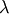
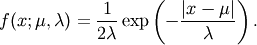
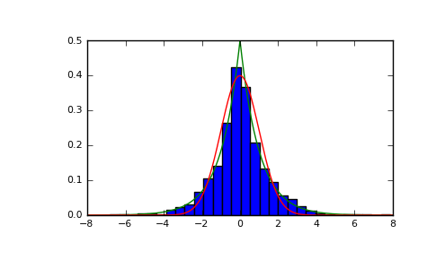

numpy.random.mtrand.RandomState.laplace¶
- RandomState.laplace(loc=0.0, scale=1.0, size=None)¶
Draw samples from the Laplace or double exponential distribution with specified location (or mean) and scale (decay).
The Laplace distribution is similar to the Gaussian/normal distribution, but is sharper at the peak and has fatter tails. It represents the difference between two independent, identically distributed exponential random variables.
Parameters : loc : float
The position,
 , of the distribution peak.
, of the distribution peak.scale : float
, the exponential decay.
Notes
It has the probability density function

The first law of Laplace, from 1774, states that the frequency of an error can be expressed as an exponential function of the absolute magnitude of the error, which leads to the Laplace distribution. For many problems in Economics and Health sciences, this distribution seems to model the data better than the standard Gaussian distribution
References
[R162] Abramowitz, M. and Stegun, I. A. (Eds.). Handbook of Mathematical Functions with Formulas, Graphs, and Mathematical Tables, 9th printing. New York: Dover, 1972. [R163] The Laplace distribution and generalizations By Samuel Kotz, Tomasz J. Kozubowski, Krzysztof Podgorski, Birkhauser, 2001. [R164] Weisstein, Eric W. “Laplace Distribution.” From MathWorld–A Wolfram Web Resource. http://mathworld.wolfram.com/LaplaceDistribution.html [R165] Wikipedia, “Laplace distribution”, http://en.wikipedia.org/wiki/Laplace_distribution Examples
Draw samples from the distribution
>>> loc, scale = 0., 1. >>> s = np.random.laplace(loc, scale, 1000)
Display the histogram of the samples, along with the probability density function:
>>> import matplotlib.pyplot as plt >>> count, bins, ignored = plt.hist(s, 30, normed=True) >>> x = np.arange(-8., 8., .01) >>> pdf = np.exp(-abs(x-loc/scale))/(2.*scale) >>> plt.plot(x, pdf)
Plot Gaussian for comparison:
>>> g = (1/(scale * np.sqrt(2 * np.pi)) * ... np.exp( - (x - loc)**2 / (2 * scale**2) )) >>> plt.plot(x,g)
(Source code, png, pdf)

{kind=link}

Previous topic
numpy.random.mtrand.RandomState.hypergeometric
Next topic
numpy.random.mtrand.RandomState.logistic